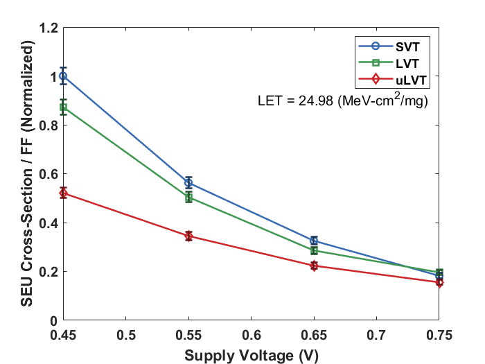
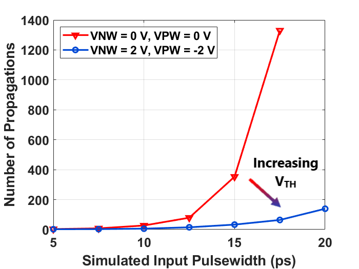

About Me
I'm currently working on finishing my PhD in electrical engineering at Vanderbilt University, where I am a member of the Radiation Effects and Reliability group. My main professional goal is to put my background in electrical and computer engineering to good use in a fulfilling R&D career. I have worked on projects ranging from low-level ASIC layouts to high-level machine-learning software, but my recent projects have focused on characterizing the effects of radiation on microelectronics. If you are interested in learning more about what I’ve worked on, my resume can be found here.
{kind=link}
Research
Most of my current research involves studying the effects of radiation on microelectronics. I usually work on radiation hardening at the circuit level, so my research regularly involves doing VLSI layout, circuit simulations, PCB design, test trips to particle accelerators and other types of radiation test facilities, and programming. My PhD work involves exploring arbitrary-waveform generators as tools for built-in self-test (BIST) and hardware stimulus-emulation purposes. This BIST capability has proven useful for a photocurrent measurement circuit that I helped design, but I believe that similar circuits could be useful in many high-reliability applications. A couple of the papers I've worked on are highlighted below, but a more-complete list of my publications can be found here.
|

|
J. V. D'Amico et al. IEEE TNS, 2021 We examine single-event upset (SEU) responses of D flip-flop (FF) designs with different threshold-voltage options in a 7-nm bulk FinFET technology. |
|

|
J. V. D'Amico et al. IEEE TNS, 2023 We analyze single-event upset (SEU) and single-event transient (SET) responses of digital logic in a planar 22nm fully-depleted conventional-well silicon-on-insulator (FD-SOI) technology under various test conditions. |